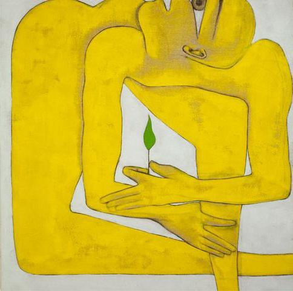
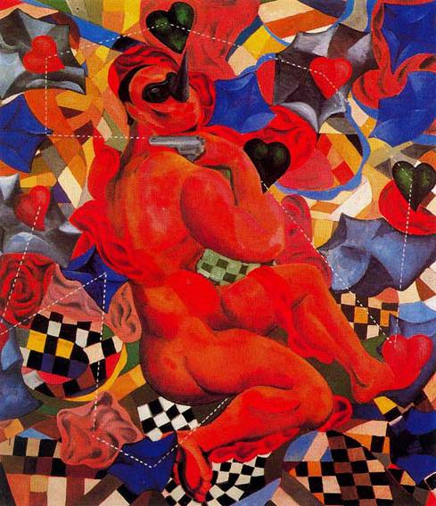

Постмодернизм
Постмодернизм в живописи – это современное направление в изобразительном искусстве, которое появилось в ХХ веке и довольно популярно в странах Европы и в Америке.
Само название данного стиля переводится как «после модерна». Но так однозначно постмодернизм воспринимать нельзя. Это не только направление в искусстве – это выражение человеческого мировосприятия, состояние души. Постмодернизм – это способ выразить себя. Главные особенности этого стиля – противопоставление реализму, отрицание норм, применение готовых форм, а также ирония. Возник постмодернизм как способ противостоять модерну. Расцвет этого стиля пришёлся на вторую половину ХХ века. Впервые термин «постмодернизм» был использован в 1917 году в статье, которая критиковала теорию Ницше о сверхчеловеке.
Цикличность характерна для искусства, но постмодерн стал первым примером «отрицания отрицания». В начале модернизм отверг классику, а затем постмодернизм отверг модернизм, как он ранее отверг классику. Постмодернисты вернулись к тем формам и стилям, которые были до модернизма, но на более высоком уровне.
Франческо Клемента
Ещё один известный во всём мире представитель стиля "постмодернизм" в живописи - итальянский художник Франческо Клементе. Он родился в Неаполе в 1952 году. Первая выставка его работ состоялась в Риме, в 1971 году, ему тогда было 19 лет. Художник много путешествовал, бывал в Афганистане, в Индии. Его женой стала театральная актриса. Франческо Клементе обожал Индию и бывал там очень часто. Ему настолько полюбилась культура этой страны, что он даже сотрудничал с индийскими миниатюристами и мастерами по изготовлению бумаги – рисовал миниатюры гуашью на бумаге ручной работы. Известность художнику принесли картины, на которых были изображены эротические образы зачастую изуродованных частей тела человека, многие его творения были выполнены им в очень насыщенных тонах. В начале 80-х годов ХХ века он написал серию картин маслом. В 90-е годы ХХ века он стал работать в новой для себя технике – восковая фреска. Работы Ф. Клементе принимали участие в большом количестве выставок в разных странах. Самыми убедительными его работами считаются те, в которых он передаёт своё собственное настроение, свои душевные терзания, фантазии и увлечения. Одна из последних его выставок проходила в 2011 году. Франческо Клементе по сей день живёт и работает в Нью-Йорке, но часто посещает Индию.

Сандро Киа
Ещё один итальянский художник, который представляет постмодернизм в живописи. Фото одной из работ Сандро Киа продемонстрировано в данной статье. Он не только художник, он также график и скульптор. Известность пришла к нему в 80-е годы ХХ века. Родился Сандро Киа в Италии в 1946 году. Образование получил в родном городе, Флоренции. После учёбы много путешествовал, искал для себя идеальное место жительства, в результате своих поисков в 1970 году стал жить в Риме, а в 1980 г. переехал в Нью-Йорк. Сейчас С. Киа живёт то в Майами, то в Риме. Работы художника начали выставлять как в Италии, так и в других странах – в 70-х годах. У Сандро Киа свой художественный язык, который наполнен иронией. В его работах яркие насыщенные цвета. Многие его картины изображают мужские фигуры героического вида. В 2005 году президент Италии наградил Сандро Киа золотой медалью за вклад в развитие культуры и искусства. Огромное количество картин художника находится в музеях Германии, Японии, Швейцарии, Израиля, Италии и других стран.

Где смотреть: Галерея Тейт (Лондон, Великобритания), Национальный музей современного искусства Центр Помпиду (Париж,Франция), Музей Гуггенхайма (Нью-Йорк, США).